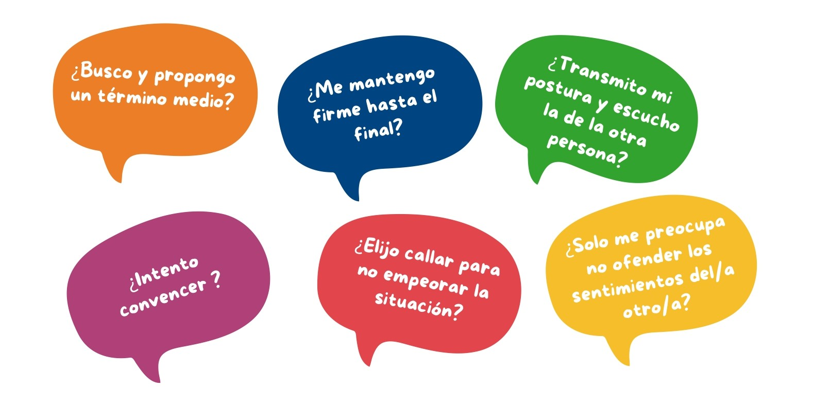

Teniendo en cuenta que todas las personas tenemos una manera predominante a la hora de afrontar una situación conflictiva, la cual determinará un resultado posible, a continuación detallamos los cinco estilos de abordaje.
Veamos a cuál nos acercamos más👇🏻
Competición🥇
Buscamos satisfacer nuestros propios intereses por encima de los intereses de la otra parte. Abordar el conflicto nos significa ganar o perder dado que tenemos la razón y la otra persona no.
Evitación⛔
Presentamos una actitud apática, de indiferencia o negación ante una situación problemática. Abandonamos el asunto ya sea por falta de interés o costes muy altos.
Acomodación🏳️
Nos ajustamos a la postura de la otra persona para mantener la relación o hacerla sentir bien. Pasamos a estar de acuerdo con todo, aún, sacrificando nuestro interés o resultado.
Compromiso🖇️
Nos esforzamos por llegar a un punto medio teniendo en cuenta los intereses de ambas partes.
Colaboración🤝
Buscamos obtener el mejor resultado posible, manteniendo el vínculo con la otra parte y satisfaciendo los intereses de todas las personas involucradas.
Luego de analizar cada estilo, compartimos algunas preguntas reflexivas que nos ayudarán a conocer y determinar nuestra postura frecuente ante un conflicto para poder rever los resultados obtenidos.

De esta manera, volviendo al interrogante de considerar al conflicto como una oportunidad, diremos que sí lo es porque luego de asumir su condición de inevitable, podremos pararnos desde otra perspectiva y elegir qué actitud emplear ante su acaecimiento.
Esta actitud y forma que utilicemos para su abordaje, podrá llevarnos a un proceso de aprendizaje, cambio y mejora en nuestra comunicación e interacción social.
De manera complementaria, podremos enriquecernos con el uso de estrategias y herramientas que nos permitan potenciar habilidades para la gestión y resolución pacífica que analizaremos en los próximos módulos📚